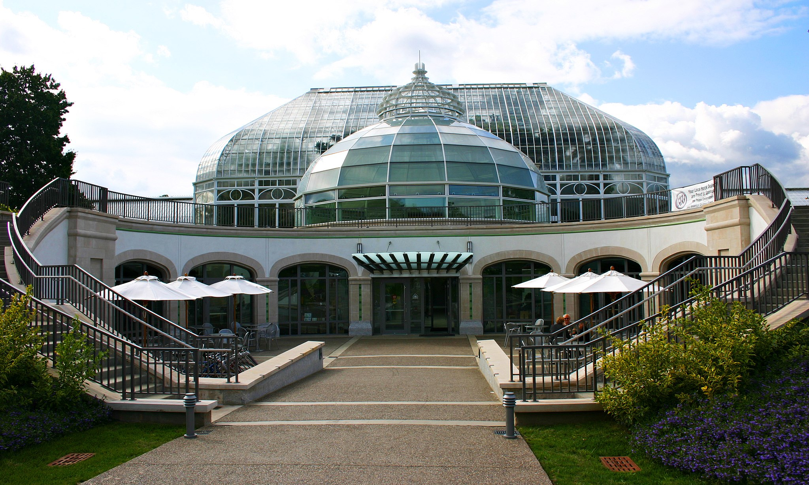
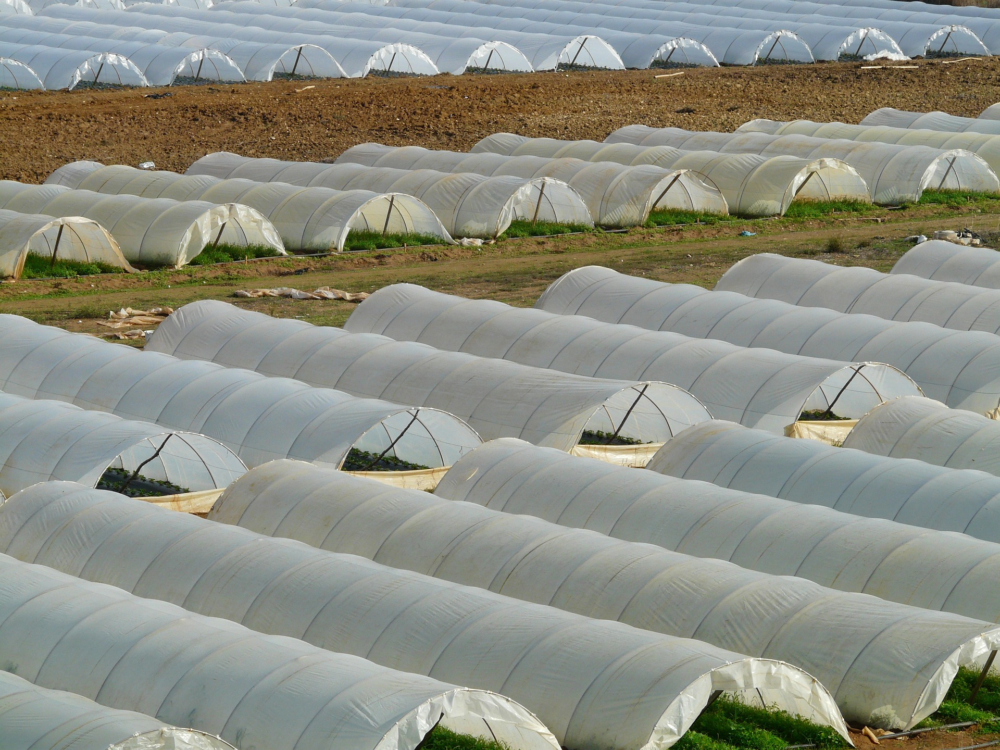
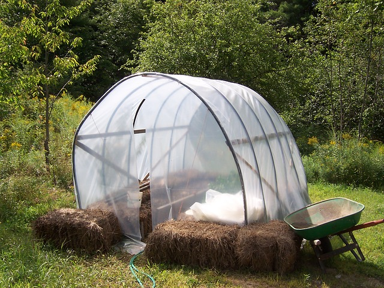

Greenhouses
What is a greenhouse? A greenhouse—also known as a glass house, hot house, or a conservatory—has walls and a roof often made of glass. Phipps Conservatory, shown below, is a greenhouse that has glass walls and ceilings. But greenhouses can also be made of heavy plastic. Both glass and plastic are thermal insulators, meaning that thermal energy is not easily transferred through their materials. Thermal insulators help greenhouses stay at the same temperature. Greenhouses also have heating and cooling equipment to help them stay at a constant temperature. This protects plants from outside weather conditions and controls the environment of the plants. The humidity, amount of light, and other conditions are also controlled to protect plants and help them grow.
Phipps Conservatory in Pittsburgh (shown above) is an example of a (glass) Victorian Greenhouse.
To control the amount of light plants get, greenhouses may have inside lighting. Also, screens can be put up along the greenhouse walls to help reflect or block some of the sunlight so plants don't get too much sunlight. Plants that need more light can be exposed to artificially produced light in greenhouses.
Because greenhouses are designed to control variables like temperature, amount of light, and humidity, they are good places to do experiments with plants.
History of Greenhouses
Greenhouses were originally developed in Rome around 30 AD. They were created for the emperor’s health. The first “modern” botanical greenhouse (or greenhouse for plants) is considered Leiden, Holland and the work of Jules Charles in 1599. He created this to raise tropical plants for medicines. They grew larger in the 17th century. Some say George Washington had a greenhouse on his property to grow pineapples.
The Wye Orangery, built on a plantation on Maryland’s eastern shore, is America’s only remaining 18th century greenhouse. The plantation is the place where Frederick Douglass spent some of his slave years. Frederick Douglass wrote in his famous memoir of his life as a slave that this greenhouse “…abounded in fruits of almost every description, from the hardy apple of the north to the delicate orange of the south.”
Artifacts (including dishes, teacups, and religious items) show that slaves were responsible for taking care of greenhouses. They kept the fires going to keep a constant warm temperature. Many slaves also lived in greenhouses. There is also evidence that the slaves did experiments to develop plants for food and medicine.
Greenhouses became very popular in the mid-1800s not only for growing plants but also to help people in crowded cities experience nature.
 
The greenhouses above are made of plastic. Some stores even sell smaller greenhouses (like the one on the right) to the public.
Check your understanding...